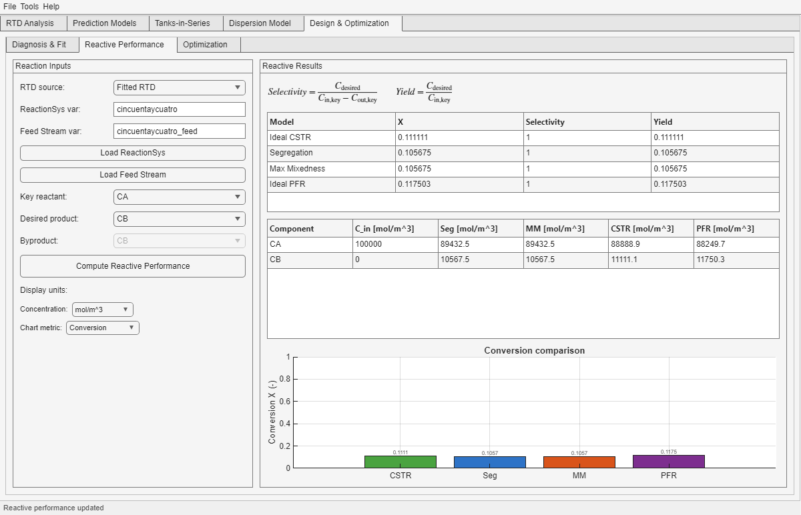

This subtab compares Ideal CSTR, Segregation, Maximum Mixedness, and Ideal PFR using one selected RTD source and one shared chemistry definition.

ReactionSys and Stream.| Control | Use it for |
|---|---|
| RTD source | Compare chemistry either on the original RTD or on the equivalent fitted RTD from Diagnosis & Fit. |
| ReactionSys var / Feed Stream var | Identify which workspace objects are loaded into the subtab. |
| Key reactant | Defines which species is used for the reported conversion and as the denominator reference for some metrics. |
| Desired product | Defines which species is used to report selectivity and yield. |
| Byproduct | Provides the complementary product selector for outlet-concentration tracking. |
| Chart metric | Changes only the plotted comparison metric, not the underlying computed solution set. |
| Result block | What it tells you |
|---|---|
| Metric table | How conversion, selectivity, and yield compare across Ideal CSTR, Segregation, Maximum Mixedness, and Ideal PFR. |
| Concentration table | How all species leave the reactor in each model. |
| Chart | A quick visual comparison for the currently selected chart metric. |
If you are unsure how much weight to give a difference between two models, use the Results Interpretation appendix before treating a small numerical gap as an important design conclusion.